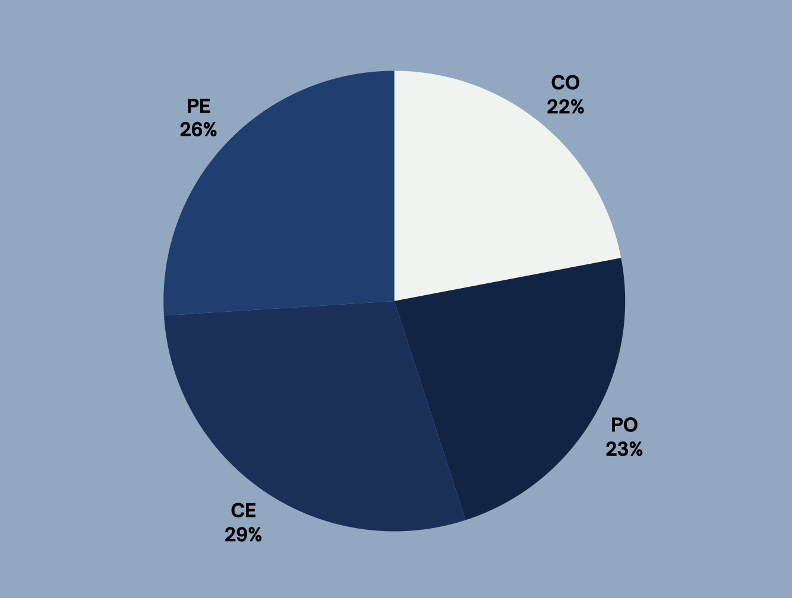

Salut! Bienvenu à mon portfolio langagier! Si vous ne le
savez pas déjà, je m’appelle Vishwa et je suis une étudiante
en 12e année à un lycée en Ontario maintenant. Cette site web
est la archive de mon engagement à développer mes compétences
linguistiques depuis 5 mois.
Ma Reparatition Finale
(CO) Compréhension Orale
22/100
(PO) Production Orale
23/100
(CE) Compréhension Écrite
29/100
(PE) Production Écrite
26/100

Mes Buts d'apprentissage
Je voudrais continuer mon éducation en français pour le plusieurs
raisons, mais je voudrais souligner mes buts de parler avec les
francophones natifs et être compris. Spécifiquement, je souhaite
visiter ou vivre dans les endroits francophones comme en France
ou à Montréal. Mais, pour naviguer dans ces endroits, j'ai besoin
d'apprendre et parler français avec maîtrise. Par ailleurs, si je
vivais dans les endroits francophones, je voudrais savoir la
culture comme la musique, la littérature, etc.
Ma Formation Scolaire
J'ai commencé mon éducation en français dans mon école élémentaire:
«Wendat Village Public School», avec le programme du français cadre.
J'ai maintenant étudié le français depuis huit ans et je pense que
mon éducation dans mon école secondaire: «Stouffville District
Secondary School», que j'ai commencé réellement comprendre le français.
Pendant mes premières années d'éducation en français l'enseignement a
été contradictoire et vague donc je n’étais pas intéressée pas. Mais
lorsque j'ai suivi mon premier cours de français dans mon lycée, j'ai
découvert que français est une très belle langue et je voudrais
l'apprendre.
Mon Expérience Hors de l'École
Quelquefois dans ma vie, j'ai visité des endroits francophones
comme Montréal et Ottawa. Cependant, je ne suis pas francophone
et en ce moment je n'ai pas des amis francophones. Mais lorsque
j'ai découvert ma passion pour apprendre le français, j'amorçais
immerger moi-même dans la langue. Alors, maintenant je lis,
écris et parle beaucoup de français pour exhauster mes aptitudes.
Parfois, je regarde des films en français aussi! Mais ma chose
préférée à faire est à écouter la musique française.
Particulièrement, j'adore écouter Stromae et Merveille parce
qu'ils sont mes chanteurs préférés. J'espère que je continue mon
voyage de français.
Mon Inspiration
Mon inspiration est à écouter et comprendre les francophones natifs parler français
et entendre la poésie française. Il y a eu très souvent lorsque je suis tombée sur
la poésie française sur mes réseaux sociaux et j'étais amoureuse. Le fait que je
pouvais comprendre la poésie et sa profondeur j'étais très fière. Avec ces
expériences je suis inspirée pour continuer mon éducation en français pour que je
comprenne davantage la poésie et un contexte plus profond.
Une autre inspiration pour moi est l'avantage de la connaissance d'une autre
langue pour ceux qui envisagent d'entreprendre comme moi. Expressément, lorsque
parler avec les clients ou les associés qui sont francophones natifs, ayant une
maîtrise peut aider à garantir l'affaire.